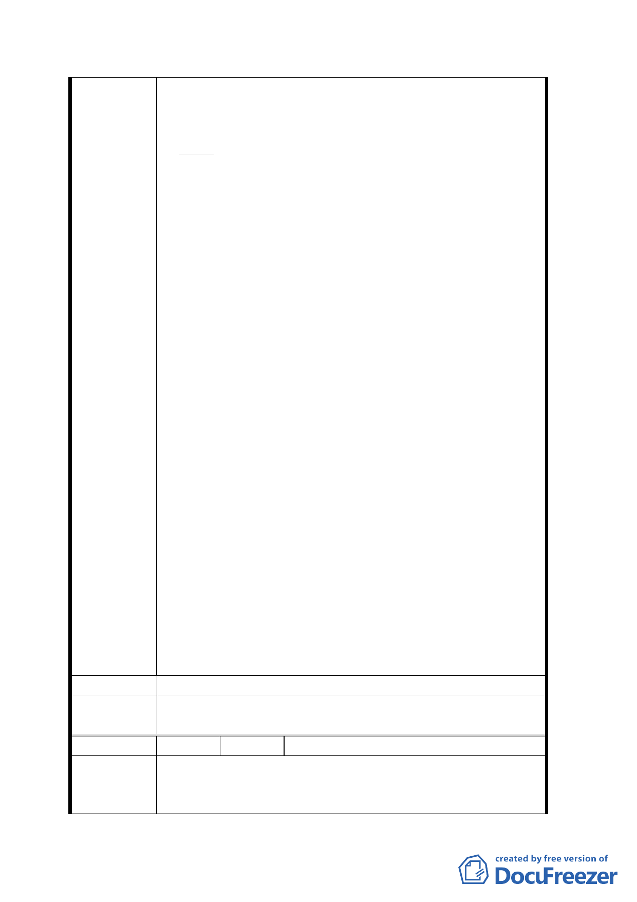

（３）早應分成両案、分別處理：
沿貴陽街之合法建築物基地之處理、應自廣場計晝
案土地案完全割開、分成為両案、而分別處理。兩
案毫無任何直接或間接関係。理教公所附近之衆多
違章建築物、及日益増多之違建居民問題、解決難
度非常高。
沿貴陽街合法建物基地案、至為單純、對政府不致
有任何負担及開支。國有財産局接受依法申請承購
建物基地、處理難度等於零。共僅有十二處並肩相
連之合法建築物基地、其総面積不大、對廣場用地
計晝案不致有影響。對國有財産局之或可有之標售
亦無任何影響、因得標者随時可向十二承購者洽購
或洽商合建。該十二所有権人、遵守法規已逾半世
紀之守法功勞不可埋没．必要時更可協助、其承購
後有待繳納之鉅額、應付土地増値税。
（４）建立西門社區活動中心：如在台北市松山區
三民路口之民生社區活動中心大樓、建立一所能迎
合西門地區居民、實際而迫切所需之西門社區活動
中心大樓、其當能大大提高西門地區居民之各種日
常活動。為慎重起見、可先経附近里長分発意見調
査表給隣近居民、以探測各階層居民之反応、意見、
建議、及眞需求、並供為適宜計晝之具体指標。西
門町地區至今、尚無具規模之市立圖書舘、如民生
社區三民分舘、也無社區活動中心大樓。此提案遠
比設立涵義廣凡而不具特定使用目標之廣場計画、
更具有用途或使用目的至為明確而具体、非常適合
西門町地區、居民實際需要之社區活動中心。其實
際利用價値及實用性、絶対非廣場計画案能相比。
建 議 辦 法 同陳情理由
委員會決
議
同決議一、二。
編 號 20 陳情人 劉瑞貞等三人
陳情位置：漢中段二小段 0132、0133-0137-1 等七
陳 情 理 由 筆地號）
上述七筆地號即西寧南路 261-263 號之房屋在民國
二六